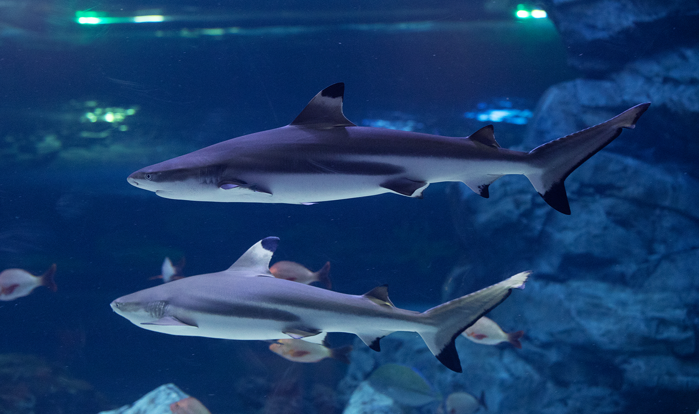
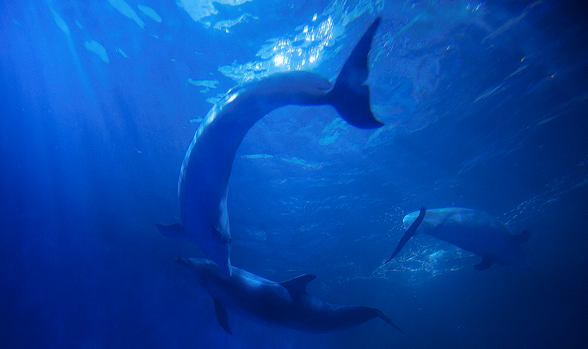
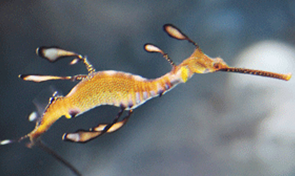

해양생물 보호
보호가 필요한 생물의 건강 상태와 행동을 관찰하고, 안정적인 관리 환경을 설계합니다.
바다와 생명을 지키는 지속적인 노력
아쿠아플라넷은 해양수산부 지정 서식지외보전기관으로서 해양생물의 보호와 증식을 위한 연구를 수행합니다
전문적인 번식·사육 관리와 환경 연구를 통해 생물다양성 보전에 기여하고 있습니다
Protect해양생물 보호
Breeding개체군 유지
Research생태 연구
Preserve생물다양성 보전
보호와 증식을 위한 연구 대상
 고래류
고래류 바다거북
바다거북 어류
어류 무척추동물
무척추동물보호가 필요한 생물의 건강 상태와 행동을 관찰하고, 안정적인 관리 환경을 설계합니다.
번식과 성장 기록을 축적해 장기적인 보호와 개체군 유지에 필요한 기준을 만듭니다.
수질, 먹이, 행동 반응 데이터를 바탕으로 해양 생태 보전에 필요한 근거를 마련합니다.
관찰에서 보전 교육까지 이어지는 연구 흐름

아쿠아플라넷은 생물의 상태와 환경 변화를 지속적으로 기록하고, 연구 결과를 사육 관리와 교육 콘텐츠에 반영합니다.
보호, 번식, 연구, 교육이 하나의 흐름으로 이어질 때 해양 생태계 보전의 힘이 커집니다.
바다와 생명을 지키는 지속적인 노력
아쿠아플라넷은 해양수산부 지정 서식지외보전기관으로서 해양생물의 보호와 증식을 위한 연구를 수행합니다
전문적인 번식·사육 관리와 환경 연구를 통해 생물다양성 보전에 기여하고 있습니다

Protect해양생물 보호

Breeding개체군 유지

Research생태 연구

Preserve생물다양성 보전
보전 활동을 통해 보호하고 연구하는 해양생물 사례를 소개합니다
보호가 필요한 해양생물들을 체계적으로 관리하고 연구합니다
건강한 개체군 유지와 생물다양성 보전을 위해 노력하고 있습니다
고래류기각류 수달펭귄류
수달펭귄류 바다거북
바다거북 해마와 해룡상어류
해마와 해룡상어류
Whale
고래
고래류는 전 세계 바다에 서식하는 대표적인
해양 포유류로, 흰수염고래와 돌고래, 상괭이
등이 포함됩니다.
과거 무분별한 포획으로 개체 수가 감소해
현재는 국제적인 보호와 보전활동이
이루어지고 있습니다
보전 활동을 통해 보호하고 연구하는 해양생물 사례를 소개합니다
보호가 필요한 해양생물들을 체계적으로 관리하고 연구합니다
건강한 개체군 유지와 생물다양성 보전을 위해 노력하고 있습니다
고래류기각류수달펭귄류바다거북해마와 해룡상어류Otter
수달
우리나라엔 유라시안 수달이 분포하고 있으며
이 수달은 천연기념물 제330호이자
멸종위기 야생생물 1급으로 지정되었습니다.
숫자가 감소되어가는 수달의 복원을 위해
현재는 국제적인 보호와 보전활동이
이루어지고 있습니다
보전 활동을 통해 보호하고 연구하는 해양생물 사례를 소개합니다
보호가 필요한 해양생물들을 체계적으로 관리하고 연구합니다
건강한 개체군 유지와 생물다양성 보전을 위해 노력하고 있습니다
고래류기각류수달펭귄류바다거북해마와 해룡상어류‘지느러미처럼 생긴 발이 달린 동물’ 이라는 뜻입니다
아쿠아플라넷 일산, 제주에서 만나볼 수 있는 바다코끼리를 포함하여 바다사자류, 물범류가 있으며 총 33종이 알려져 있습니다

Walrus
바다코끼리

Sea Lion
바다사자

Seal
물범
Walrus
바다코끼리
바다코끼리는 최대 3.6m, 2톤에 이르는
대형 기각류입니다.
긴 엄니를 먹이를 찾거나 몸을 보호하는 데
사용하며 북극 연안에 서식합니다.
Sea Lion
바다사자
물개라고도 불리는 바다사자는 긴 앞지느러미를
가지고 있어 육상에서 자유롭게 움직입니다.
개체 수 감소로 보호받고 있습니다.
Seal
물범
물범은 전 세계 바다에 서식하는 대표적인
기각류입니다.
우리나라에서는 백령도 인근에 점박이 물범이
서식하며 보호받고 있습니다.
보전 활동을 통해 보호하고 연구하는 해양생물 사례를 소개합니다
보호가 필요한 해양생물들을 체계적으로 관리하고 연구합니다
건강한 개체군 유지와 생물다양성 보전을 위해 노력하고 있습니다
고래류기각류수달펭귄류바다거북해마와 해룡상어류Penguin
펭귄
기후변화로 인해 남극의 환경이 훼손되며 남극에
서식하는 펭귄들의 숫자가 빠른 속도로
줄어가고 있습니다.
남극조약 협의당사국 회의를 통해 세종기지 옆
해안 언덕에 서식하는 펭귄을 포함한 생물들을
맡아 관리하게 되었습니다.
보전 활동을 통해 보호하고 연구하는 해양생물 사례를 소개합니다
보호가 필요한 해양생물들을 체계적으로 관리하고 연구합니다
건강한 개체군 유지와 생물다양성 보전을 위해 노력하고 있습니다
고래류기각류수달펭귄류바다거북해마와 해룡상어류Sea Turtle
바다거북
바다 거북이에 의해 풍성해진 해초밭은
다양한 해양생물의 은신처가 되어
생태계를 풍부하게 만들어줍니다.
우리나라에서는 4종의 바다거북이
2013년 해양수산부에서 지정하는
보호대상해양생물로 신규 지정되었습니다.
보전 활동을 통해 보호하고 연구하는 해양생물 사례를 소개합니다
보호가 필요한 해양생물들을 체계적으로 관리하고 연구합니다
건강한 개체군 유지와 생물다양성 보전을 위해 노력하고 있습니다
고래류기각류수달펭귄류바다거북해마와 해룡상어류Seahorse
해마

Sea dragon
해룡
Seahorse
해마
1990년대 이후 해마는 빠른 속도로
감소하기에 이르렀습니다.
CITES 동물군에 포함되었지만, 불법적으로
거래가 이루어지고 있는 상황입니다.
우리나라에서는 가시해마와 복해마를
보호대상해양생물로 지정 보호하고 있습니다.
Sea dragon
해룡
해룡은 움직임이 느려,
쉽게 천적의 공격을 받기 때문에
성체가 되는 개체는 많지 않은 생물입니다.
또한 서식지가 오염됨에 따라 개체 수가
줄어들고 있는 상황입니다.
오스트레일리아의 해안에만 있는 어류로
수출을 금하며 보호하고 있는 어류입니다.
보전 활동을 통해 보호하고 연구하는 해양생물 사례를 소개합니다
보호가 필요한 해양생물들을 체계적으로 관리하고 연구합니다
건강한 개체군 유지와 생물다양성 보전을 위해 노력하고 있습니다
고래류기각류수달펭귄류바다거북해마와 해룡상어류Shark
상어
상어는 사람을 먹잇감으로
삼지 않으며 오히려 사람에 의해 상어가
멸종위기에 처한 상황입니다.
아쿠아플라넷에서는 상어의
서식지외보전기관으로서 다양한 상어들의
보전을 위해 노력하고 있습니다.
구조부터 방사까지, 회복의 여정
아쿠아플라넷은 해양수산부 지정 해양동물전문구조·치료기관으로서 부상 및 조난 해양생물을 구조하고 치료합니다
전문 인력의 보호와 재활 과정을 거쳐 건강하게 바다로 돌아갈 수 있도록 지원합니다

01
생명의 가치를 지키는 긴급 구조 시스템

02
전문 의료진의 정밀 진단과 맞춤형 치유 솔루션

03
야생성 회복을 위한 체계적이고 과학적인 재활 프로그램

04
자연의 품으로 완벽하게 돌아가는 건강한 복귀
구조, 치료를 통해 보호한 해양생물 사례를 소개합니다
제주 바다에서 구조된 돌고래들의 이야기입니다
구조와 치료를 거쳐 다시 바다를 향한 여정을 이어갑니다


Figma 원본 1920px 캔버스를 화면 폭에 맞춰 축소 표시합니다.